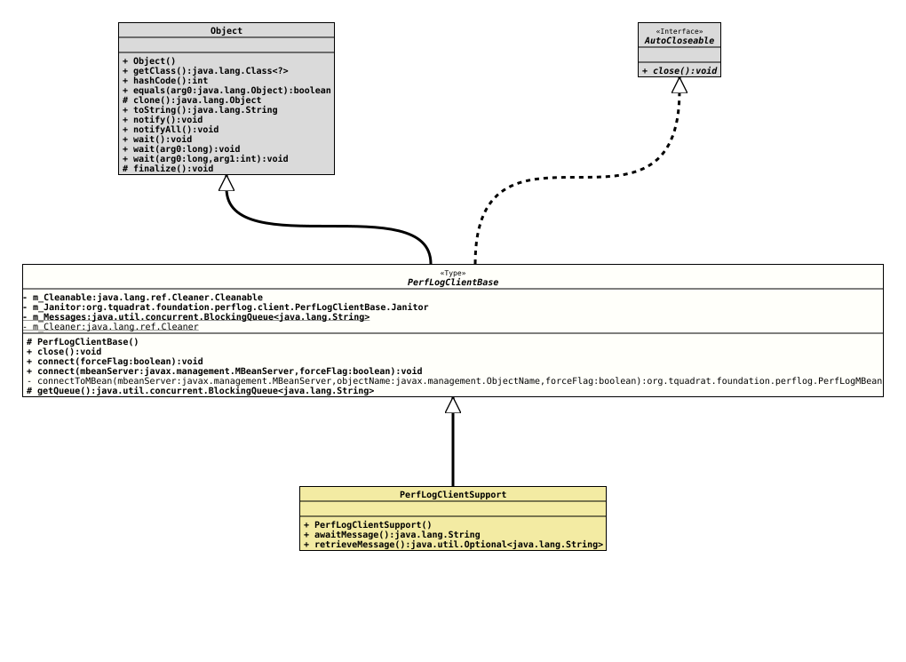

Class PerfLogClientBase
java.lang.Object
org.tquadrat.foundation.perflog.client.PerfLogClientBase
- All Implemented Interfaces:
AutoCloseable
- Direct Known Subclasses:
PerfLogClientSupport
@ClassVersion(sourceVersion="$Id: PerfLogClientBase.java 1216 2026-05-02 11:16:24Z tquadrat $")
@API(status=MAINTAINED,
since="0.25.0")
public abstract class PerfLogClientBase
extends Object
implements AutoCloseable
The abstract base class for a client for the Foundation
Performance Logging and Monitoring. Basically, this is a recipient for the
Notification
messages that are sent each time a
performance
section was left.
- Author:
- Thomas Thrien (thomas.thrien@tquadrat.org)
- Version:
- $Id: PerfLogClientBase.java 1216 2026-05-02 11:16:24Z tquadrat $
- Since:
- 0.25.0
- UML Diagram
-

UML Diagram for "org.tquadrat.foundation.perflog.client.PerfLogClientBase"
{kind=link}
-
Nested Class Summary
Nested ClassesModifier and TypeClassDescriptionprivate static final recordThe janitor that takes care of the housekeeping for an instance ofPerfLogClientBasein case that was not properly closed.private static final record -
Field Summary
FieldsModifier and TypeFieldDescriptionprivate Cleaner.CleanableTheCleaner.Cleanablefor this instance.private static final CleanerThe cleaner that is used to finalise instances ofPerfLogClientBase.private PerfLogClientBase.JanitorThe caretaker for this instance.private final BlockingQueue<String> The messages. -
Constructor Summary
ConstructorsModifierConstructorDescriptionprotectedCreates a new instance ofPerfLogClientBase. -
Method Summary
Modifier and TypeMethodDescriptionfinal voidclose()final voidconnect(boolean forceFlag) Establishes the connection to the MBean and starts the listening.final voidconnect(MBeanServer mbeanServer, boolean forceFlag) Establishes the connection to the MBean and starts the listening.private static final PerfLogMBeanconnectToMBean(MBeanServer mbeanServer, ObjectName objectName, boolean forceFlag) Establishes the connection with thePerfLogMBeanon the given MBean server and returns a proxy for it.protected final BlockingQueue<String> getQueue()Returns a reference to the internal message queue.
-
Field Details
-
m_Cleanable
TheCleaner.Cleanablefor this instance. -
m_Janitor
The caretaker for this instance. -
m_Messages
The messages. -
m_Cleaner
-
-
Constructor Details
-
PerfLogClientBase
protected PerfLogClientBase()Creates a new instance ofPerfLogClientBase.
-
-
Method Details
-
close
- Specified by:
closein interfaceAutoCloseable
-
connect
public final void connect(boolean forceFlag) throws IllegalStateException, InstanceNotFoundException Establishes the connection to the MBean and starts the listening.
- Parameters:
forceFlag-trueif the MBean should be registered in case it is not yet registered,falseotherwise.- Throws:
IllegalStateException- The connection is already established.InstanceNotFoundException-forceFlagisfalse, thePerfLogMBeanis not registered, and the notification listener cannot connect to it.
-
connect
public final void connect(MBeanServer mbeanServer, boolean forceFlag) throws IllegalStateException, InstanceNotFoundException Establishes the connection to the MBean and starts the listening.
- Parameters:
mbeanServer- The MBean server that holds the MBean.forceFlag-trueif the MBean should be registered in case it is not yet registered,falseotherwise.- Throws:
IllegalStateException- The connection is already established.InstanceNotFoundException-forceFlagisfalse, thePerfLogMBeanis not registered, and the notification listener cannot connect to it.
-
connectToMBean
private static final PerfLogMBean connectToMBean(MBeanServer mbeanServer, ObjectName objectName, boolean forceFlag) throws InstanceNotFoundException Establishes the connection with the
PerfLogMBeanon the given MBean server and returns a proxy for it.If the MBean is not registered an exception is thrown.
- Parameters:
mbeanServer- The MBean server that is used.objectName- The name for the MBean.forceFlag-trueif the MBean should be registered in case it is not yet registered,falseotherwise.PerfLogMBean.- Returns:
- The MBean that we connected to.
- Throws:
InstanceNotFoundException-forceFlagisfalseand the MBean is not registered in the given MBean server.
-
getQueue
Returns a reference to the internal message queue.- Returns:
- The message queue.
-